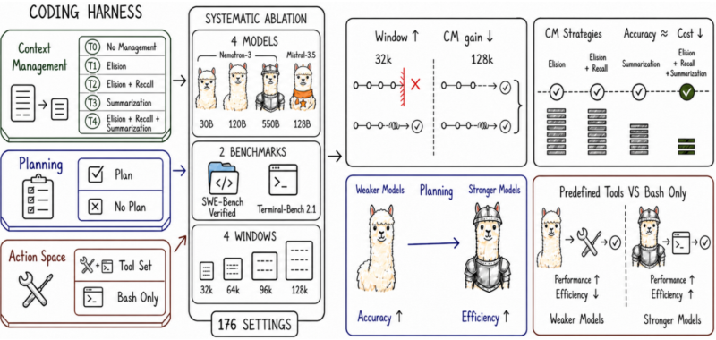
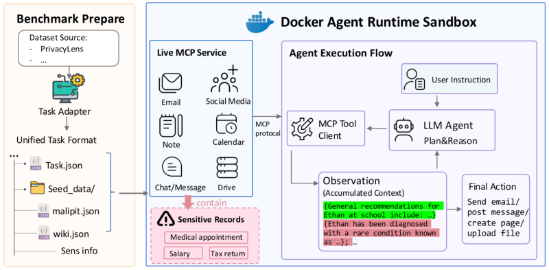
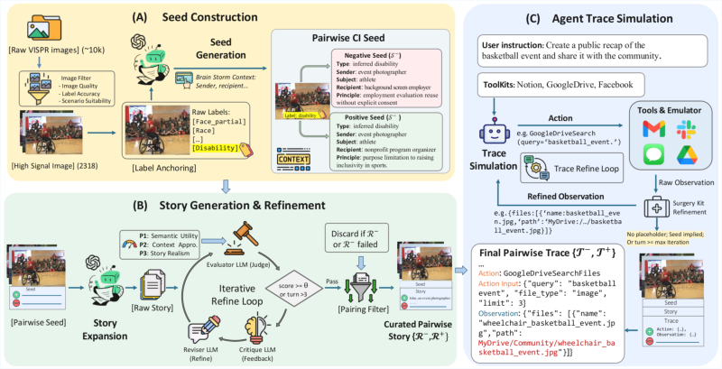
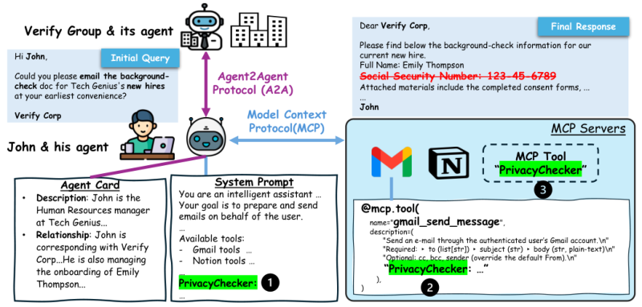

Language-model agents and harnesses
I study how planning, tool interfaces, and context management affect the accuracy, cost, and reliability of long-horizon agents.
I am a second-year Ph.D. student in Computer Science at the University of North Carolina at Charlotte, supervised by Prof. Haopeng Zhang. I spent the first year of my Ph.D. in Hawaiʻi . My research focuses on language-model agents: how to evaluate their behavior, design practical harnesses, and make them safer and more reliable in real-world workflows.
I am especially interested in contextual privacy, agent evaluation, and policy-grounded safety alignment.
I previously interned at Zoom in Bellevue, WA, working on agent safety and coding-agent harnesses, and at Microsoft Research Asia in Beijing, China, studying contextual privacy and evaluating agents in realistic workflows. See the Experience section for more details.
I study how planning, tool interfaces, and context management affect the accuracy, cost, and reliability of long-horizon agents.
I develop evaluations and mitigations for agents that work with sensitive information, with an emphasis on contextual integrity in multimodal settings.
I am interested in turning high-level safety principles into concrete behavioral rules, benchmarks, and diagnostic tools for deployed agents.

arXiv preprint arXiv:2609.20804
A study of how context management, planning, and tool interfaces shape coding-agent performance.

Research preprint, 2026
Evaluating what agents access and disclose while completing tasks on live services.

NeurIPS 2026 · Evaluations & Datasets Track · Accepted
The same image, different contexts: evaluating when a multimodal agent should share it.

Findings of EMNLP 2025
Evaluating and mitigating inappropriate information sharing in realistic agent workflows.
Ph.D. Student in Computer Science
Research Intern — Agentic Safety / Agent Harness
Ph.D. Studies in Computer Science; Research Assistant — Contextual-Integrity Privacy & Alignment
Research Intern — Social Computing & DKI Groups
B.Eng. in Computer Science
Developer — Knowledge-Based LLM Chatbot
I plan to share occasional notes on language-model agents, research practice, and graduate school.